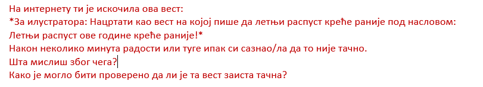
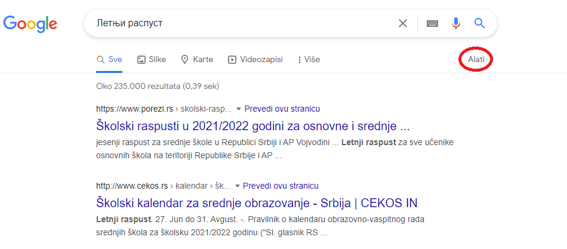
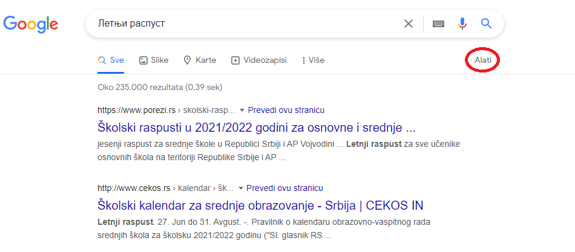
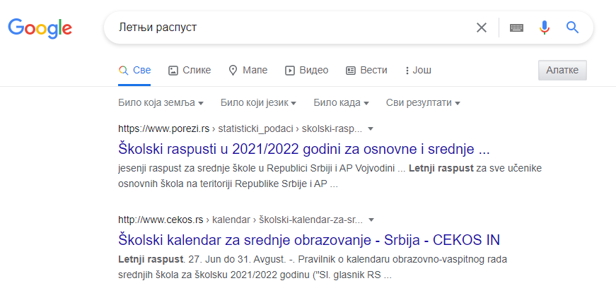

Квиз¶
Питање 1:
Интернет прегледач и претраживач су неопходни за рад рачунара?
а) Тачно
б) Нетачно
Питање 2:
Бројевима од 1-5 означи тачан редослед како можеш на интернету пронаћи оно што тражиш:
Покретање прегледача ___
Уношење кључних речи ___
Укључивање рачунара ___
Покретање претраживача ___
Одабир прегледача (ако их је више) ___
Питање 3:
Међу понуђеним појмовима означи интернет прегледаче:
Мозила Фајерфокс
Гугл Хром
Бинг
Гугл
Питање 4:
Кључне речи су неопходне како бисмо на интернету нашли нешто?
а) Тачно
б) Зависи како их и којим редом унесеш.
в) Нетачно
Питање 5:
Што јасније напишемо шта тражимо на интернету, брже ћемо пронаћи жељене резултате? (означи одговоре који нису тачни).
а) Тачно
б) Нетачно
в**) Зависи од доба дана (ујутру на интернету има мање људи).**
г) Све зависи којим редоследом их напишемо.
д) Лакше ћемо их наћи ако правилно унесемо кључне речи.
Питање 6:
Повежи симболе са њиховом улогом у претраживачу
„“ Изостављање одређеног дела из кључних речи.
Добијање резултата претраге по одређеном редоследу.
Замена одређеног појма, који стављаш када не можеш да се сетиш одређеног појма.
Питање 7:
Да ли се реч тенис може сматрати добром кључном речју? Образложи свој одговор
а) Да
б) Не
в) Све зависи од тога шта тражиш на интернету.
Резултати интернет претраге¶
Замисли ситуацију да питаш две различите особе једно исто питање, а да добијеш два потпуно различита одговора. Пошто заиста не знаш коме да верујеш, можда би питао још некога?
Иста ситуација је и на интернету. Не мора да значи да је све оно што прочиташ тамо истина. Већ смо рекли да, на пример, неки чланак или информацију на интернету може да напише било ко, тако да шта год желимо да проверимо или научимо на интернету морамо да проверимо на више места (извора). Због тога је веома важно да интернет садржајима приђеш критички, а то значи да увек провериш тачност информација, порекло, када је она објављена (можда се, у међувремену, нешто мењало или постоје нека нова сазнања).
Задатак 1¶
{kind=link}
Пример 1¶
Можда је вест из прошлог задатка заиста тачна, али је објављена пре неког извесног времена, али ти се појавила међу првима. Из тог разлога резултате претраге можеш “филтрирати” по датуму објаве у неколико лаких корака.
 

{kind=link}
Када ти изађу резултати претраге у горњем десном углу изабереш опцију “Алатке”, након тога изабери опцију “Било када”
{kind=link}

И затим можеш резултате претраге “филтрирати” по томе када је нешто постављено на интернет


Задатак¶

Распитај се код старијих људи из свог окружења на који начин су тражили информације пре појаве интернета.
Шта су радили када је требало да напишу рад о неком познатом научнику?
Шта мислиш о томе, да ли им је тада било лакше или теже него у данашње време?

Енциклопедија је дело у коме се, углавном по азбучном, односно абецедном реду, обрађују одређене појаве или појмови. Постоје опште енциклопедије које обрађују све појмове, затим енциклопедије које обухватају одређене области, дечје енциклопедије, и тако даље. Развојем технологије и на интернету су доступне броје енциклопедије различитих аутора.
На интернету постоје енциклопедије које свако, па чак и ти можеш да уредиш. То заправо значи да можеш да напишеш чланак у коме ћеш себе представити као врсног фудбалера или успешну балерину.
Шта мислиш због чега то није добро? Да ли се то разликује од прикривања истине и у правом животу?
Као што смо већ закључили, на интернету постоје и проверене и непроверене информације. Неки портали и сајтови се служе и кликбејтом (clickbait). Шта је то заправо? Кликбејт одређену вест представља много занимљивијом него што њен садржај заправо јесте. Људи који пишу такве вести желе да што више корисника ту вести отвoри како би имали више прегледа и самим тим остварили одређену корист. Неки од примера кликбејт наслова су: НЕЋЕТЕ ВЕРОВАТИ КАДА ОВО ПРОЧИТАТЕ!, ДА ЛИ СТЕ ЗНАЛИ ОВО?!, ОВАЈ ТЕКСТ МОРАТЕ ДА ПРОЧИТАТЕ! и слично.
У данашње време рекламе су на сваком кораку. На телевизијском програму, радио-станицама, новинама, али свакако су веома заступљене и на интернету. Често се деси да, када на интернету пустимо неки видео-запис, пре него што он почне прво иде нека реклама.
У електронским медијима су рекламе такође веома заступљене. Наравно, разлог за то је што у данашње време много људи из практичних разлога чита електронске медије.
Обрати пажњу на следећу рекламу:

Да ли можеш бити сигуран да ћеш постићи те резултате за пет дана само и због чега?
Углавном су интернет рекламе или огласи насловљени као Оглас плаћене рекламе. То практично значи да је нека фирма или човек платио да та реклама буде на интернету, али не значи да је тај производ или услуга заиста толико квалитетна. Закључићемо још једном да интернет јесте користан, али да не треба веровати свему што тамо прочитамо.
Задатак 3¶
Да ли би се изненадио/ла?
Како би реаговао/ла и зашто?
Како би посаветовао/ла друге којима се то деси?
Замисли да ти при претраживању неког сајта „искочи“ оваква порука:
Задатак 4¶
Осмисли плакат који ће послужити као оглас. То може бити производ који већ постоји, а можеш и да осмислиш свој. Слободно пусти машти на вољу!
Задатак 5¶
Смисли и откуцај једну вест или репортажу. Већ знаш да је вест или репортажа препричавање одређеног догађаја. То може нешто везано за школски турнир, о улепшавању твог омиљеног парка или слично. Битно је да ти буде блиска, да има довољно информација (шта се десило, где се десило, када се десило…)
Можеш користити и фотографије.
Забави и себе и друге!

Постоје људи на интернету који на превару желе да стекну информације о теби. То не смеш дозволити, али више о томе ћеш научити у следећим лекцијама.
Провери своје знање¶
Питање 1:
Шта ћеш урадити када ниси сигуран да ли је нека информација на интернету тачна?
а) Повероваћу у њу, јер чим је на интернету мора бити поуздана.
б) Потражићу још неки извор или мишљење.
в) Одустаћу од тражења тих информација.
Питање 2:
Подаци у интернет енциклопедијама углавном нису тачни?
а) Тачно
б) Нетачно
в) Зависи од тога да ли је та енциклопедија научно поуздана и на њој раде људи који су познати у одређеној области. (Ако си ставио одговор под в, објасни од чега зависи.)
Питање 3:
Где све имамо приступ електронским медијима (селектуј само један тачан одговор)?
а) Код куће.
б) На улици.
в) Свуда око нас где постоје одређени медији.
Питање 4:
Објасни која је сврха Кликбејта? Означи тачне одговоре.
а) Да те убеди да купиш нешто преко интернета.
б) Да ти скрене пажњу да нису све странице на интернету поуздане.
в) Да те насловом заинтересује да неку вест, видео-запис, оглас или неки други садржај отвориш.
Питање 5:
Где се све појављују огласи?
а) У новинама.
б) На интернету.
в) Свуда око нас - на улици, поштанском сандучету…**
г) Сви одговори су тачни.